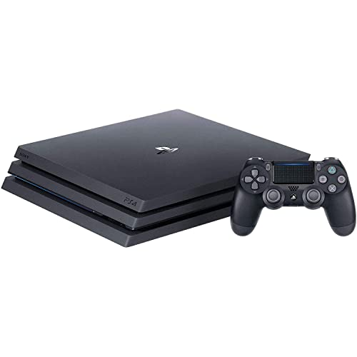

PlayStation 2
Sony Entertainment

Videoconsola de sobremesa de Sony, lanzada en el año 2000, siendo la más vendida de la historia (más de 155-160 millones de unidades).
Sony Entertainment
Videoconsola de sobremesa de Sony, lanzada en el año 2000, siendo la más vendida de la historia (más de 155-160 millones de unidades).
Sony Entertainment

La PlayStation 3 (PS3) es la tercera videoconsola de sobremesa producida por Sony Computer Entertainment, sucesora de la PS2 y parte de la séptima generación.
Sony Entertainment
La PlayStation 4 (PS4) es una videoconsola de sobremesa de octava generación producida por Sony Computer Entertainment, lanzada en 2013. Diseñada por Mark Cerny, cuenta con una arquitectura x86-64 que facilita el desarrollo de juegos, permitiendo reproducir títulos en 1080p, con opciones para 4K y HDR en modelos Pro.